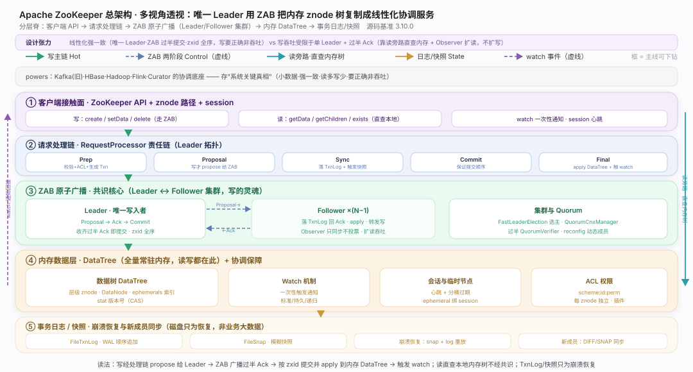
ZooKeeper 原理 · 全景主线框架
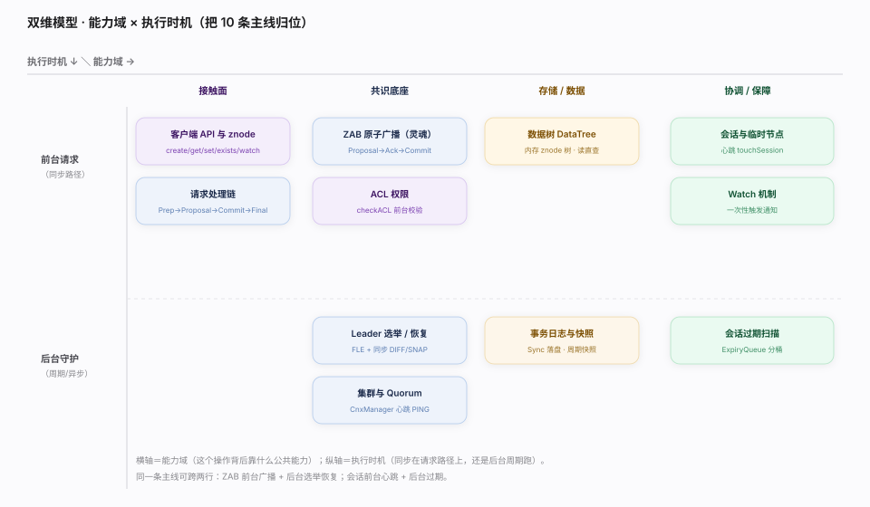
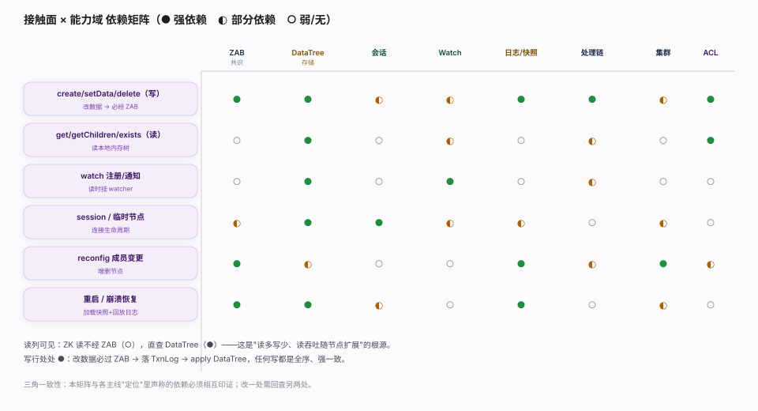
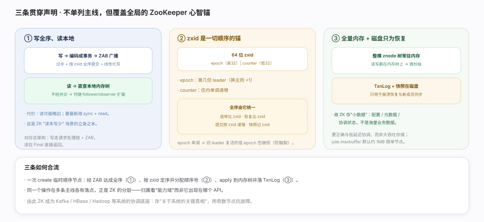
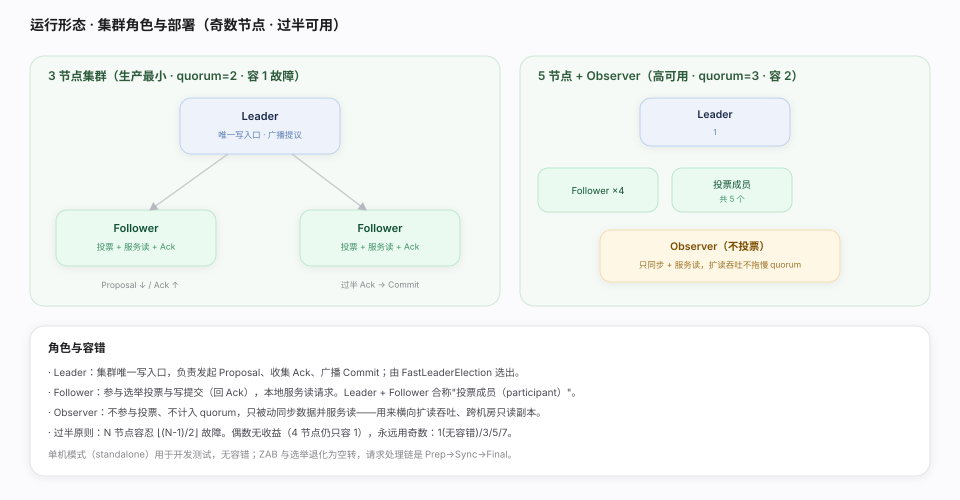
一句话总纲ZooKeeper 是强一致（CP）的分布式协调服务：一族客户端 API（create/get/set/getChildren/exists/delete + watch + session）操作一棵层级 znode 树为接触面，灵魂是 ZAB 原子广播——任何写都编码成事务、由唯一 Leader 发起 Proposal 广播到过半 follower 落 TxnLog 回 Ack、收齐后按 zxid（epoch|counter 全序）Commit 并 apply 到内存 DataTree、再触发一次性 watch；读默认直查本地内存树不经共识故可扩展。会话心跳维系临时节点、分桶过期回收，TxnLog+快照保崩溃恢复，QuorumCnxManager+FastLeaderElection 选主，每 znode 独立 ACL 管权限。它存"关于系统的关键真相"，用奇数节点抗故障，要正确与低延迟协调而非大吞吐——这是 Kafka/HBase/Hadoop 等分布式系统的协调底座。
与 etcd 的心智对照（读前必看）
| --- | --- | --- | --- |
|---|---|---|---|
| 共识协议 | ZAB（ZooKeeper Atomic Broadcast） | Raft | 都是主-从、日志+过半+选主；ZAB 恢复阶段独立（发现→同步→广播），主先定 epoch 再广播 |
| 数据模型 | 层级 znode 树（路径 → 节点，节点带数据+子节点） | 扁平 KV + revision MVCC | ZK 是文件系统式命名空间，天然表达层级/父子/顺序 |
| 变更订阅 | watch：一次性触发（触发后需重新注册） | 按 revision 持续流式推送 | ZK 一次性语义更轻，但客户端需"读+重挂"；3.6+ 补了持久/递归 watch |
| 临时数据 | ephemeral 节点绑 session（会话断即删） | lease TTL（key 绑 lease） | ZK 用连接生命周期，etcd 用显式租约 + keepalive |
| 多版本 | 仅保留最新值 + stat 版本号 | 保留多版本、可按 revision 读历史 | ZK 不做时间旅行读；版本号只用于 CAS |
| 实现 | Java | Go | — |
能力域主线索引（1 接触面 + 8 支撑）
| 类别 | 主线 | 一句话职责 | 核实锚点 |
|---|---|---|---|
| 接触面 | 客户端 API 与 znode | create/get/set/getChildren/exists/delete/multi + watch + session；znode 路径模型（持久/临时/顺序/容器/TTL） | FinalRequestProcessor.java、ZooDefs.java、DataTree.java |
| 支撑·灵魂 | ZAB 原子广播 | Proposal→Ack→Commit 广播 + Leader 选举/恢复；zxid 全序 | quorum/{Leader,Follower,LearnerHandler,FastLeaderElection}.java |
| 支撑 | 数据树 DataTree | 内存层级 znode 树：nodes 映射、DataNode、ephemerals 索引 | DataTree.java、DataNode.java、ZKDatabase.java |
| 支撑 | 会话与临时节点 | session 心跳 + 分桶过期；ephemeral 节点绑 session | SessionTrackerImpl.java、ExpiryQueue.java |
| 支撑 | Watch 机制 | 一次性触发通知；标准/持久/递归 watch | watch/{WatchManager,WatchManagerOptimized}.java |
| 支撑 | 事务日志与快照 | WAL（FileTxnLog）+ 模糊快照（FileSnap）+ 崩溃恢复 | persistence/{FileTxnLog,FileSnap,FileTxnSnapLog}.java |
| 支撑 | 请求处理链 | RequestProcessor 责任链；Leader/Follower/单机三种拓扑 | {Prep,Sync,Final}RequestProcessor.java、quorum/{Commit,Proposal}RequestProcessor.java |
| 支撑 | 集群与 Quorum | QuorumPeer 状态机、QuorumCnxManager 选举连接、QuorumVerifier 过半、reconfig | quorum/{QuorumPeer,QuorumCnxManager}.java |
| 支撑 | ACL 权限 | scheme:id:perm，每 znode 独立 ACL；authprovider 插件 | ZooKeeperServer.java、auth/*、ZooDefs.java |
ZooKeeper 原理 · 接触面主线 · 客户端 API 与 znode
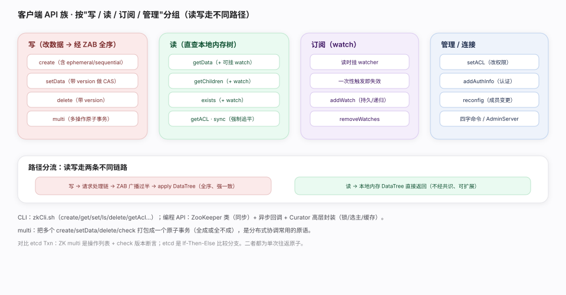
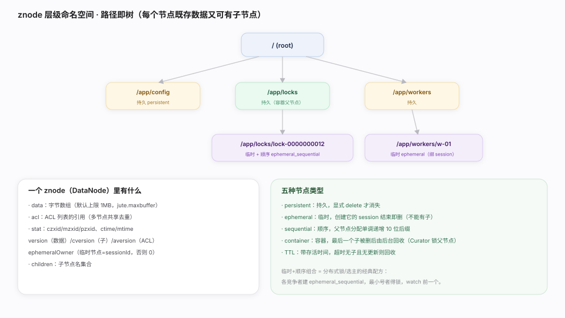
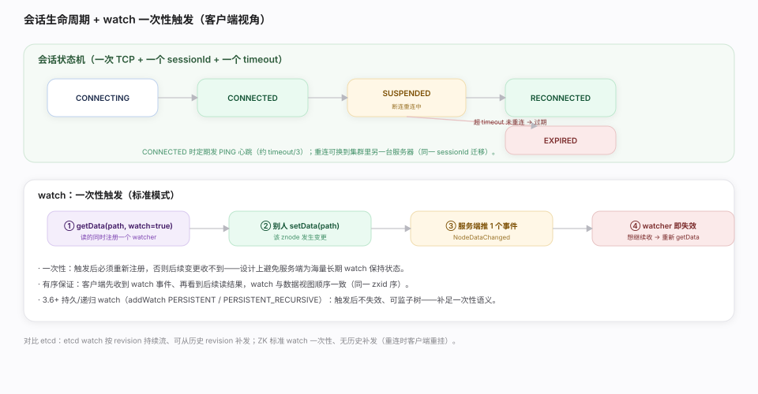
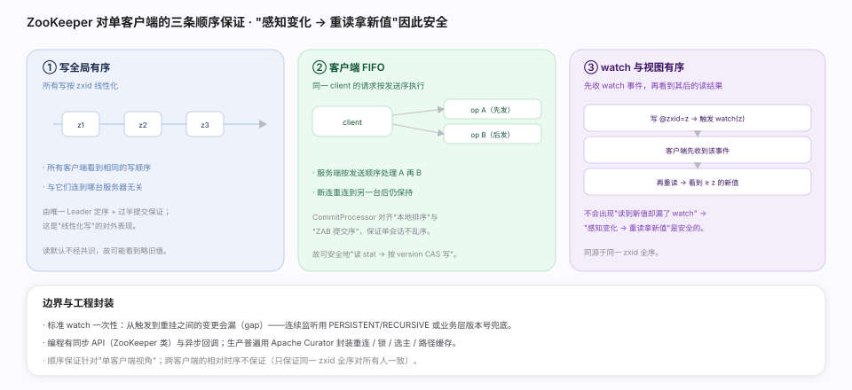
定位客户端 API 与 znode 是 ZooKeeper 的接触面——用户下发一切操作的入口（对应 SQL 引擎的"语句族"、etcd 的"gRPC API 族"）。骨架 =
一族 API（create/getData/setData/getChildren/exists/delete/multi + watch + session）操作一棵层级 znode 树 → 服务端按读/写分流。它是所有支撑主线的汇聚点：写→[[ZAB 原子广播]]、读→[[数据树 DataTree]]、订阅→[[Watch 机制]]、临时节点→[[会话与临时节点]]、权限→[[ACL 权限]]。核实基准：server/FinalRequestProcessor.java、ZooDefs.java、server/DataTree.java（3.10.0-SNAPSHOT）。一句话总纲客户端 API 与 znode 是 ZooKeeper 的接触面：一族极简正交的原语（create/getData/setData/getChildren/exists/delete/multi + watch + session）操作一棵类文件系统的层级 znode 树，每个 znode 既存小数据又可有子、按 persistent/ephemeral/sequential/container/ttl 五型决定生命周期；服务端按读写分流——写转事务经 ZAB 全序提交、读直查本地内存树可扩展；会话维系临时节点与 watch，标准 watch 一次性触发需重挂。少而正交的原语 + 强顺序保证，组合出锁/选主/配置/服务发现等一切协调，Curator 是其上的工程封装。
调优要点
jute.maxbuffer：单个请求/znode 数据上限（默认约 1MB）——ZK 存小数据，大 value 会撑大内存树与日志。tickTime+minSessionTimeout/maxSessionTimeout：会话超时被夹在 [2×tick, 20×tick]，决定故障检测灵敏度。- 读用就近 follower/observer 扩展吞吐；要强一致读用
sync+ read（付一次共识开销）。 multi而非多次单独写：需原子/多节点一致时用 multi，别用"多次读改写"（有竞态）。
常见误区
- 把 ZK 当数据库/大对象存储：它是协调服务，存小元数据；大 value / 海量 znode 会拖垮内存与恢复。
- 以为 watch 会持续通知：标准 watch 一次性，触发后不重挂就漏掉后续变更；用 Curator 或持久 watch。
- 忽略读可能读到旧值：读不经共识，刚写完从另一节点读可能还没追上；需最新用
sync。 - 临时节点建子节点：ephemeral 不能有子；锁的父节点要用 persistent/container。
API 与归属能力域
| API | 路径 | 归属能力域 |
|---|---|---|
| create / setData / delete / multi | 写 → 处理链 → ZAB → DataTree | [[ZAB 原子广播]] + [[数据树 DataTree]] |
| getData / getChildren / exists | 读 → 本地内存树 | [[数据树 DataTree]] |
| watch（读时挂） / addWatch | 注册 → WatchManager | [[Watch 机制]] |
| create ephemeral / 心跳 | 绑 session / touchSession | [[会话与临时节点]] |
| getACL / setACL / addAuthInfo | checkACL / auth provider | [[ACL 权限]] |
| reconfig | 成员变更事务 | [[集群与 Quorum]] |
| sync | 强制追平 leader 再读 | [[ZAB 原子广播]] |
ZooKeeper 原理 · 支撑主线 · ZAB 原子广播（灵魂）
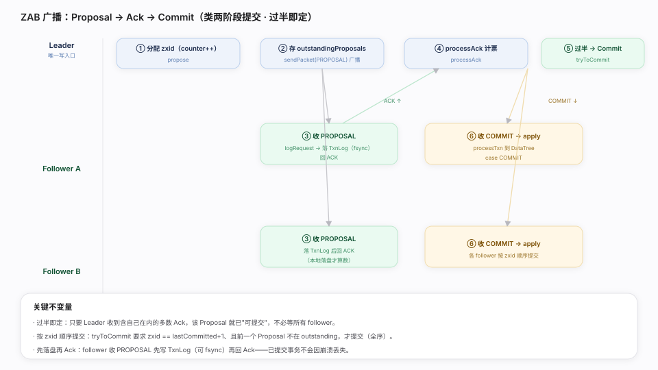
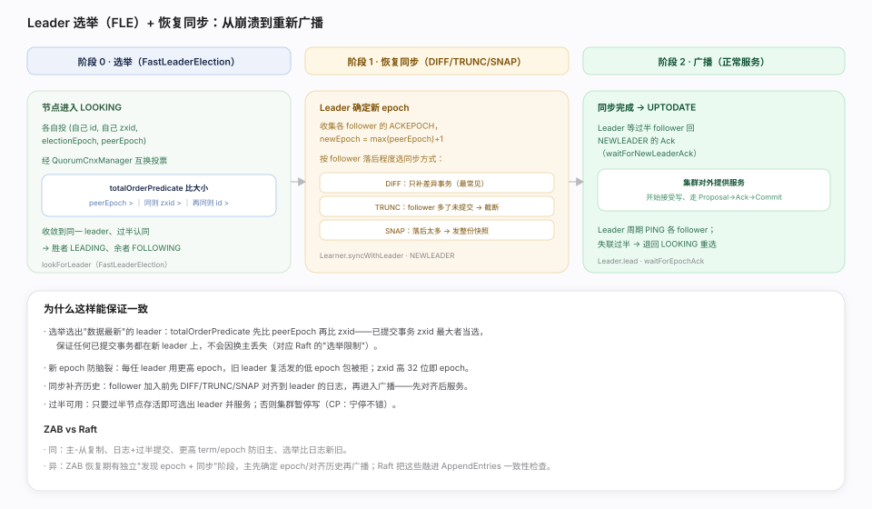
![zxid]()
定位ZAB（ZooKeeper Atomic Broadcast）是共识底座、ZooKeeper 的灵魂主线——把"单机内存树"变成"线性化写、全局有序的分布式协调服务"。骨架 =
唯一 Leader 发起 Proposal → 广播到过半 follower 落盘回 Ack → Commit → apply。它是所有写路径的必经之地（见依赖矩阵：所有写都强依赖它），被 [[数据树 DataTree]] 承接 apply、被 [[事务日志与快照]] 持久化、被 [[请求处理链]] 在 ProposalRequestProcessor 触发、被 [[集群与 Quorum]] 用 QuorumCnxManager 承载选举通信。核实基准：server/quorum/{Leader,Follower,Learner,LearnerHandler,FastLeaderElection,QuorumPeer}.java、util/ZxidUtils.java（3.10.0-SNAPSHOT）。一句话总纲ZAB 是 ZooKeeper 的灵魂共识层：唯一 Leader 给每个写分配全序 zxid（epoch<<32|counter），构造 Proposal 广播到所有 follower、follower 先落 TxnLog（fsync）再回 Ack、Leader 收齐过半 Ack 后按 zxid 顺序 Commit 并 apply 到 DataTree——过半即定、按序提交、先盘后 Ack 三不变量保证线性化写与持久性；Leader 崩溃则经 FastLeaderElection 比 (peerEpoch,zxid,id) 选出数据最新者当选、用更高 epoch 防脑裂、经 DIFF/TRUNC/SNAP 同步补齐 follower 历史后重回广播。它与 Raft 同为主-从日志复制共识，差异在独立的发现+同步恢复阶段——这是 ZooKeeper 一切写路径与顺序保证的根。
调优要点
tickTime（默认 2000ms）：ZAB 心跳与超时的基本单位；选举/会话超时都是它的倍数。initLimit：follower 初始连接 + 同步 leader 允许的 tick 数（大数据集/慢盘需调大，否则 SNAP 同步超时）。syncLimit：follower 与 leader 间发送/响应允许的 tick 数（网络抖动误判失联则调大）。zookeeper.forceSync（默认 yes）：follower Ack 前是否 fsync——关掉提速但牺牲持久性，生产勿关。electionAlg（默认 3 = FLE）：其它选举算法已废弃，保持 FLE。
常见误区
- 以为多个节点能并发写：写只经唯一 Leader 定序广播；follower 收到写请求会转发给 leader。吞吐上限是单 leader。
- 以为 follower Ack 前不落盘：默认先写 TxnLog（forceSync）再 Ack；关 forceSync 会让"已提交"在崩溃后可能丢，破坏持久性。
- 把 ZAB 当 Raft 讲：二者同族但恢复流程不同——ZAB 有独立的发现 epoch + 同步（DIFF/TRUNC/SNAP）阶段。
- 偶数节点：不增容错反增开销；用奇数。过半不可用时集群停写（CP，宁停不错）。
ZAB 与 Raft 对照
| 维度 | ZAB（ZooKeeper） | Raft（etcd） |
|---|---|---|
| 角色 | Leader / Follower / Observer | Leader / Follower / Candidate / Learner |
| 纪元 | epoch（zxid 高 32 位） | term |
| 选举依据 | 比 (peerEpoch, zxid, id) 选数据最新 | 比 (term, lastLogIndex) + 多数投票 |
| 恢复 | 独立发现+同步阶段（DIFF/TRUNC/SNAP）后才广播 | 融进 AppendEntries 一致性检查、逐步回退对齐 |
| 提交条件 | 过半 Ack 且按 zxid 顺序 | 过半 matchIndex 且当前 term 有条目 |
| 日志语义 | 事务（幂等 processTxn） | 状态机命令 |
| 每 follower 通道 | LearnerHandler 一线程 | 逐 peer 的复制流 |
ZAB 关键组件与锚点
| 组件 | 职责 | 核实锚点 |
|---|---|---|
| Leader | 定序、propose、计票、commit | Leader.java：lead:632、propose:1295、processAck:1054、tryToCommit:970 |
| LearnerHandler | Leader 侧每 follower 一个处理线程 | LearnerHandler.java（1183 行） |
| Follower | 收 PROPOSAL/COMMIT、回 Ack | Follower.java：followLeader:71、processPacket:156 |
| FastLeaderElection | LOOKING 期投票选主 | FastLeaderElection.java：lookForLeader:907、totalOrderPredicate:717 |
| 包类型常量 | PROPOSAL=2/ACK=3/COMMIT=4/DIFF=13/SNAP=15/UPTODATE=12… | Leader.java:382-470 |
ZooKeeper 原理 · 支撑主线 · 数据树 DataTree
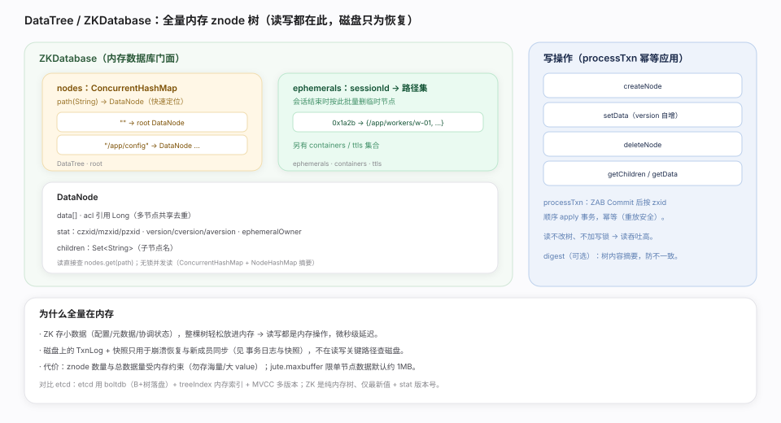
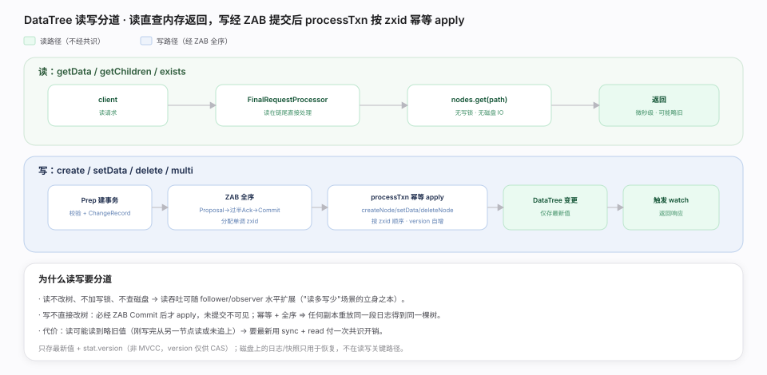
定位DataTree 是 ZooKeeper 的存储/数据核心——全量常驻内存的层级 znode 树，读写都在此发生（对应 etcd 的 MVCC store，但 ZK 是纯内存树、仅存最新值）。它承接 [[ZAB 原子广播]] Commit 后的
processTxn apply、为 [[客户端 API 与 znode]] 的读直接服务、按 sessionId 索引供 [[会话与临时节点]] 回收临时节点、其状态由 [[事务日志与快照]] 持久化恢复。核实基准：server/DataTree.java、DataNode.java、ZKDatabase.java（3.10.0-SNAPSHOT）。一句话总纲DataTree 是 ZooKeeper 的全量内存 znode 树：以 path→DataNode 的并发映射存储整棵树、DataNode 含 data/acl 引用/stat（各类 zxid 与 version）/children，并按 sessionId 维护 ephemerals 索引供会话回收；读直接查内存无磁盘 IO 故可扩展，写不直接改树而经 ZAB Commit 后由 processTxn 按 zxid 顺序幂等 apply（createNode/setData/deleteNode），幂等+全序保证重放日志得同一棵树。它只存最新值+version 号（非 MVCC 多版本）、只放小元数据（受内存约束）——磁盘上的日志与快照仅用于恢复，不在读写关键路径。
调优要点
jute.maxbuffer（默认约 1MB）：单节点数据 + 单请求上限——ZK 存小数据，大 value 撑大内存与日志。- znode 总数与总数据量受堆内存约束；监控 JVM 堆与
approximate_data_size。 zookeeper.digest.enabled：开启数据树摘要校验，检测副本间不一致（略增开销）。- 大量子节点的父路径
getChildren会返回大列表——避免单父下堆放海量子节点。
常见误区
- 把 ZK 当 KV 数据库存大数据：全量内存树，海量/大 value 会 OOM、拖慢快照与恢复。
- 以为能读历史版本：ZK 只存最新值 + version 号，无 MVCC 时间旅行；version 只用于 CAS。
- 以为写直接改树：写必经 ZAB，Commit 后才 processTxn apply；未提交不可见。
- 在临时节点下建子：ephemeral 不能有子节点。
与 etcd 存储的对照
| 维度 | ZooKeeper DataTree | etcd MVCC |
|---|---|---|
| 形态 | 纯内存层级树（map + children） | boltdb（B+树落盘）+ treeIndex 内存索引 |
| 版本 | 仅最新值 + stat 里的 version 号 | 多版本，可按 revision 读历史 |
| 读 | 直查内存、无磁盘 IO | 走 backend 事务（有缓存） |
| 数据量 | 受内存约束（存小元数据） | 受磁盘配额约束（默认 2GB） |
| 一致性单元 | znode（路径 + 数据 + 子） | key（扁平） |
| 层级 | 天然层级/父子/顺序号 | 靠 key 前缀模拟 |
stat 各字段
| 字段 | 含义 |
|---|---|
| czxid / mzxid / pzxid | 创建 / 数据最后修改 / 子列表最后修改 的 zxid |
| ctime / mtime | 创建 / 修改 时间戳 |
| version / cversion / aversion | 数据 / 子节点 / ACL 的版本号（CAS 用） |
| ephemeralOwner | 临时节点=拥有者 sessionId，持久节点=0 |
| dataLength / numChildren | 数据字节数 / 子节点数 |
ZooKeeper 原理 · 支撑主线 · 会话与临时节点
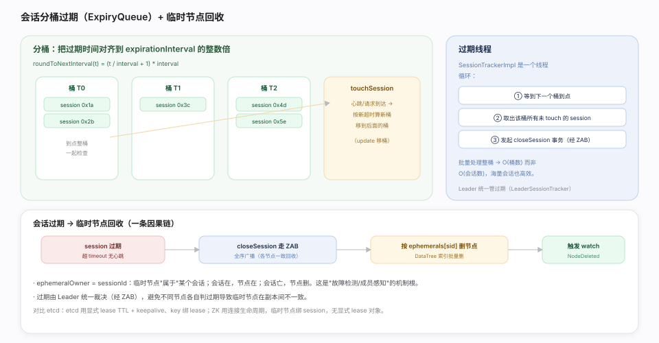
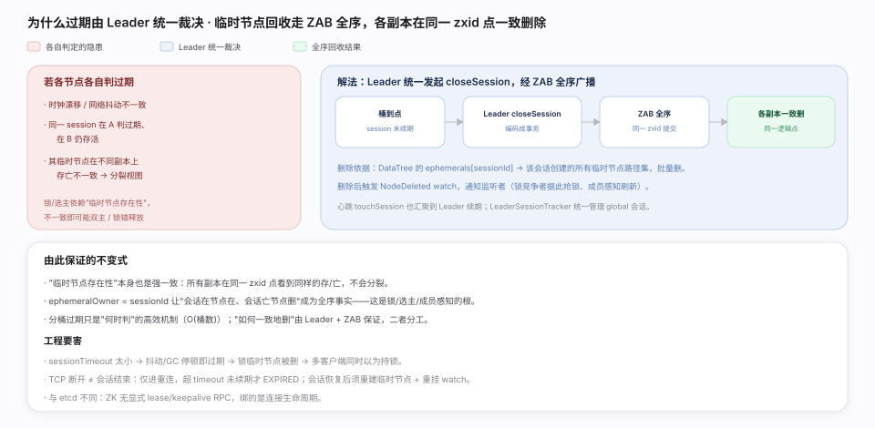
定位会话与临时节点是 ZooKeeper 的协调生命周期机制——把"客户端连接的存活"变成"可被全集群感知的成员状态"（对应 etcd 的 Lease，但 ZK 绑连接而非显式租约）。session 是 ephemeral 节点与 watch 的宿主：会话过期 → 临时节点删、watch 清。它依赖 [[ZAB 原子广播]]（closeSession 走共识全序回收）、驱动 [[数据树 DataTree]] 的 ephemerals 索引、触发 [[Watch 机制]]。核实基准：
server/SessionTrackerImpl.java、server/ExpiryQueue.java、server/quorum/{LeaderSessionTracker,LocalSessionTracker}.java（3.10.0-SNAPSHOT）。一句话总纲会话与临时节点是 ZooKeeper 的协调生命周期机制：客户端握手得全局 sessionId + 协商 timeout，CONNECTED 时约每 timeout/3 发 PING 心跳续期；服务端用分桶过期——把过期时刻对齐到 expirationInterval 整数倍、整桶批量检查、touchSession 续期即移桶，使海量会话过期成本为 O(桶数)；会话超时未续期则由 Leader 统一发起 closeSession 走 ZAB 全序回收，按 DataTree 的 ephemerals[sessionId] 索引批量删该会话的临时节点并触发 NodeDeleted watch。ephemeralOwner=sessionId 让"会话在节点在、会话亡节点删"成为强一致事实——这是分布式锁/选主/成员感知的根基，与 etcd 显式 lease 不同，ZK 绑的是连接生命周期。
调优要点
tickTime（默认 2000ms）：expirationInterval基准；也定 minSessionTimeout=2×tick、maxSessionTimeout=20×tick。- 客户端
sessionTimeout：太小→网络抖动即过期→临时节点误删（锁误释放）；太大→故障感知慢。按网络与 GC 停顿留裕量。 zookeeper.localSessionsEnabled+localSessionsUpgradingEnabled：开启本地会话减轻 leader 负担（大量只读客户端场景）。- 客户端要处理
SessionExpired：必须重建会话 + 重建临时节点 + 重挂 watch。
常见误区
- 以为 TCP 断开 = 会话结束：断连仅进入重连；只有超 timeout 未续期才 EXPIRED。反之 GC 长停顿可能触发过期。
- 依赖临时节点做锁却设过小 timeout：抖动导致会话过期 → 锁临时节点被删 → 多个客户端同时以为持锁。
- 会话恢复后不重挂 watch：过期重建的新会话不继承旧 watch，需重新注册。
- 把 session 当 etcd lease：ZK 无显式租约对象/KeepAlive RPC，绑的是连接生命周期。
会话相关机制
| 机制 | 说明 | 锚点 |
|---|---|---|
| 分桶过期 | 过期时刻对齐到 interval 整数倍，整桶批量检查 | ExpiryQueue.java:53/84 |
| 心跳续期 | CONNECTED 时约每 timeout/3 发 PING | SessionTrackerImpl.touchSession:179 |
| 会话迁移 | TCP 断连可重连到集群另一台，sessionId 不变 | Learner/ZooKeeperServer 重连握手 |
| local session | 只读/轻量会话可不经 ZAB 全局广播（优化） | LocalSessionTracker |
| ephemeralOwner | 临时节点 = sessionId，持久 = 0 | DataNode.stat |
| timeout 夹取 | 被夹在 [2×tickTime, 20×tickTime] | ZooKeeperServer min/maxSessionTimeout |
ZooKeeper 原理 · 支撑主线 · Watch 机制
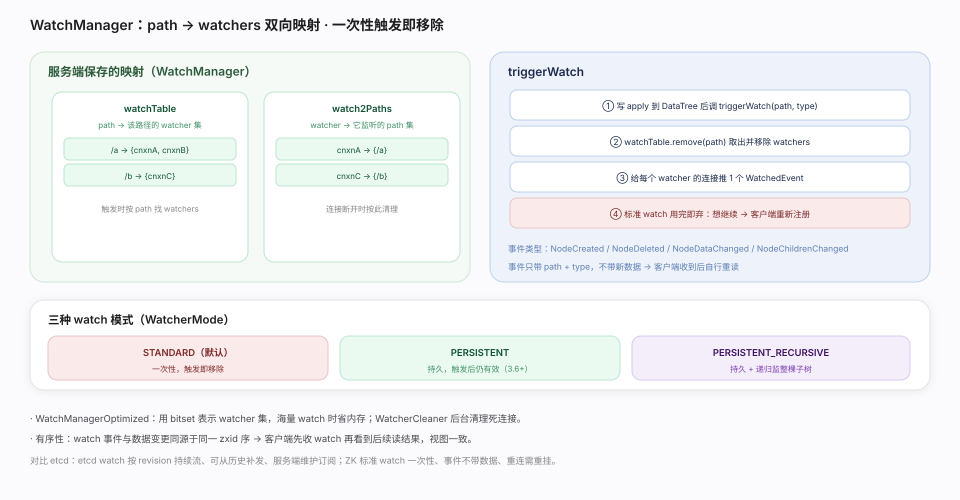
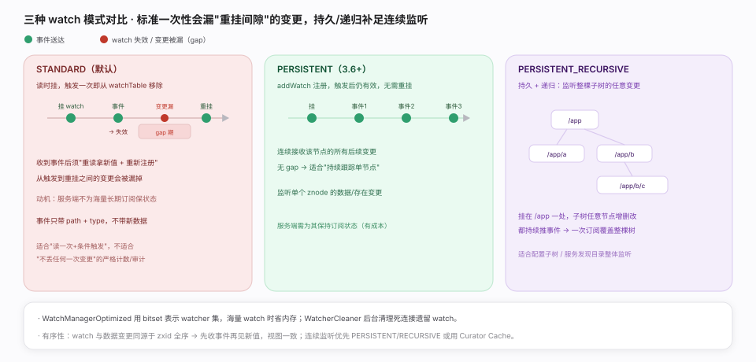
定位Watch 是 ZooKeeper 的变更订阅机制——让客户端在不轮询的前提下感知 znode 变化（对应 etcd 的 Watch，但 ZK 标准 watch 是一次性触发、事件不带数据）。它由 [[数据树 DataTree]] 的写在 apply 后触发、注册于 [[客户端 API 与 znode]] 的读操作、随 [[会话与临时节点]] 过期而清理。核实基准：
server/watch/{WatchManager,WatchManagerOptimized,WatcherMode,IWatchManager}.java（3.10.0-SNAPSHOT）。一句话总纲Watch 是 ZooKeeper 的免轮询变更订阅：WatchManager 维护 watchTable（path→watchers）与 watch2Paths（watcher→paths）两张互逆映射，写事务 apply 到 DataTree 后 triggerWatch 按 path 取出并移除 watchers、给每个连接推恰好一个只带 path+type 的 WatchedEvent；标准 watch 一次性（触发即失效、事件不带数据，客户端需重读+重挂），3.6+ 补了 PERSISTENT/PERSISTENT_RECURSIVE 持久递归 watch。watch 与数据变更同源于 zxid 全序故"先收事件再见新值"一致——一次性语义换来服务端极省状态，但重挂间隙的变更会漏，连续监听要用持久 watch。与 etcd 的持续流+历史补发不同，这是 ZK 轻量协调的取舍。
调优要点
- 优先用 PERSISTENT/RECURSIVE watch（3.6+）避免"重挂 gap"，或用 Curator 的 Cache recipe 封装重挂。
- 单路径挂海量 watcher 会放大触发推送；热点路径谨慎。
WatchManagerOptimized在超多 watch 时省内存（配置类切换）。- 客户端会话恢复后必须重挂 watch（标准 watch 不随会话迁移自动恢复）。
常见误区
- 以为 watch 持续通知：标准 watch 触发一次即失效；不重挂就漏后续变更。
- 以为事件带新数据：事件只有 path + type，必须重读拿值。
- 依赖 watch 做严格计数/审计：一次性 + gap 决定它不适合"不丢任何一次变更"的场景；用 PERSISTENT 或版本轮询兜底。
- watch 泄漏：连接断了却没清理——WatchManager 的 watch2Paths + WatcherCleaner 负责，但业务重连时也要重挂。
watch 特性与对照
| 特性 | ZooKeeper（标准） | etcd |
|---|---|---|
| 触发次数 | 一次性（触发即失效） | 持续流 |
| 事件内容 | path + type，不带数据 | 带 KV 前后值 |
| 历史补发 | 无（重连需重挂） | 可从历史 revision 补发 |
| 订阅粒度 | 单节点 / 子列表 / 3.6+ 递归子树 | key / range / 前缀 |
| 服务端状态 | 触发即移除（省状态） | 维护订阅 + progress |
| 有序 | 与 zxid 序一致 | 与 revision 序一致 |
ZooKeeper 原理 · 支撑主线 · 事务日志与快照
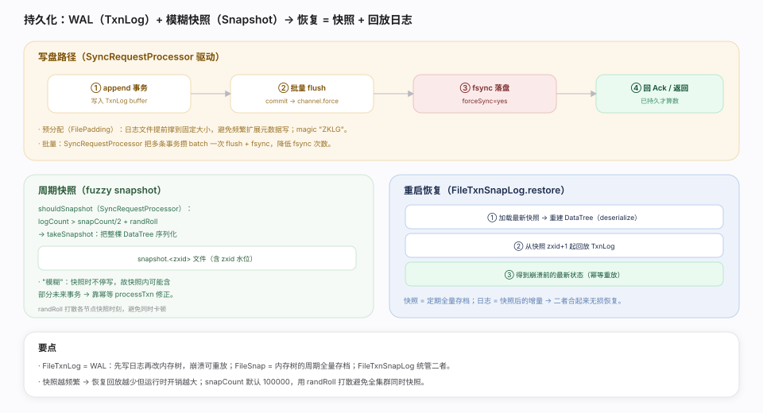
定位事务日志与快照是 ZooKeeper 的持久化与崩溃恢复层——用 WAL + 周期快照把内存 DataTree 的状态落到磁盘（对应 etcd 的 WAL + snapshot）。它承接 [[请求处理链]] 中
SyncRequestProcessor 的落盘、持久化 [[ZAB 原子广播]] 提交的事务、在重启时重建 [[数据树 DataTree]]。核实基准：server/persistence/{FileTxnLog,FileSnap,FileTxnSnapLog,FilePadding}.java、server/SyncRequestProcessor.java（3.10.0-SNAPSHOT）。一句话总纲事务日志与快照是 ZooKeeper 的持久化与恢复层：SyncRequestProcessor 把 ZAB 提交的事务批量 append 到 WAL（FileTxnLog，预分配 + magic ZKLG）、flush 时 channel.force 做 fsync（forceSync 默认 yes）才回 Ack 保证已提交不丢；并按 logCount>snapCount/2+randRoll 周期 takeSnapshot 把整棵 DataTree 序列化成 snapshot.<zxid>（模糊快照，靠幂等 processTxn 修正跨界事务，randRoll 打散各节点时刻）。重启时 FileTxnSnapLog.restore 先加载最新快照重建树、再从快照 zxid+1 回放日志——快照免从头回放、日志保最近增量，合起来无损恢复。运维要害是把事务日志放独立快盘（fsync 延迟决定写性能）、配 autopurge 防磁盘涨满。
调优要点
dataDir/dataLogDir：把事务日志单独放到独立快速磁盘（与快照分盘）——fsync 延迟是 ZK 写性能头号因素。snapCount（默认 100000）：多少事务触发一次快照——调大减少快照频率但增重启回放量。zookeeper.forceSync（默认 yes）：Ack 前是否 fsync——关掉提速但牺牲持久性，生产勿关。autopurge.snapRetainCount/autopurge.purgeInterval：自动清理旧快照与日志，防磁盘涨满。fsync.warningthresholdms（默认 1000）：fsync 超此毫秒告警——磁盘慢的哨兵（FileTxnLog.java:135）。
常见误区
- 日志与快照同盘：fsync 与快照 IO 争抢，写延迟飙升；务必
dataLogDir独立盘。 - 关 forceSync 图快：崩溃后"已提交"可能丢，破坏持久性与一致性。
- 不配 autopurge：日志/快照无限增长撑爆磁盘 → 集群不可用。
- snapCount 太小：快照过频，运行时抖动；太大则重启回放久。
- 以为快照是精确时点：fuzzy 快照含跨界事务，靠幂等重放修正——不能当"某 zxid 的精确镜像"直接用。
为什么 WAL + 快照而非只用其一
| 方案 | 问题 | ZK 的选择 |
|---|---|---|
| 只写日志 | 恢复要从头回放全部历史，越跑越慢 | ❌ |
| 只存快照 | 每次写都全量落盘，代价爆炸；两次快照间崩溃丢数据 | ❌ |
| WAL + 周期快照 | 日志保"最近增量不丢"、快照保"不用从头回放" | ✅ 恢复 = 最新快照 + 增量日志 |
组件与锚点
| 组件 | 职责 | 锚点 |
|---|---|---|
| FileTxnLog | 事务日志（WAL）：append/commit/fsync/预分配 | FileTxnLog.java：magic:102、commit:394、force:411 |
| FileSnap | 快照读写（序列化/反序列化 DataTree） | FileSnap.java |
| FileTxnSnapLog | 统管日志 + 快照；restore 恢复 | FileTxnSnapLog.java：52、restore:252 |
| FilePadding | 日志文件预分配 | FilePadding.java |
| SyncRequestProcessor | 驱动落盘 + 触发快照 | SyncRequestProcessor.java：shouldSnapshot:143 |
ZooKeeper 原理 · 支撑主线 · 请求处理链
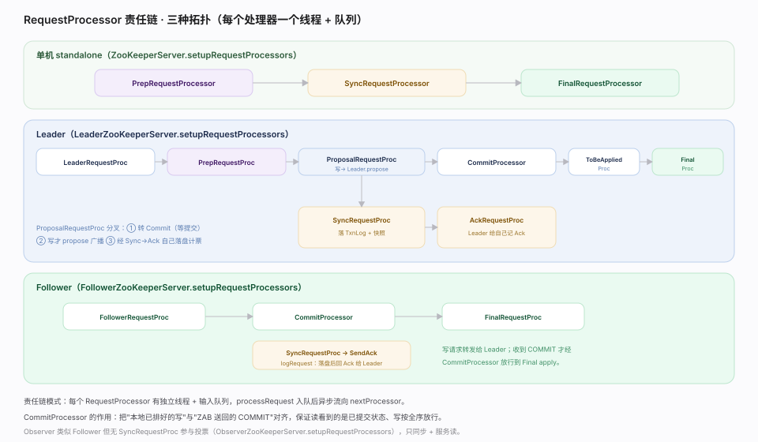
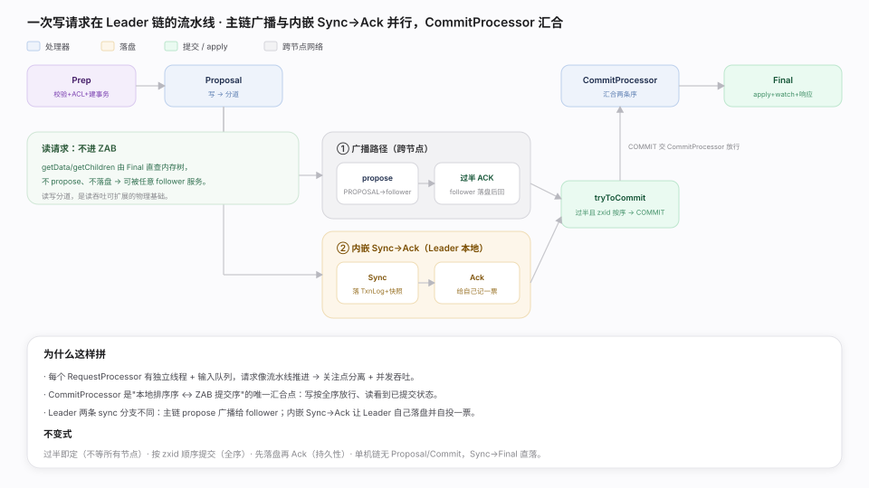
定位请求处理链是 ZooKeeper 的执行骨架——把一个请求从入站到落库的处理拆成一串
RequestProcessor（责任链），不同角色（单机/Leader/Follower/Observer）拼出不同的链。它衔接 [[客户端 API 与 znode]]（入口）、[[ZAB 原子广播]]（写在 ProposalRequestProcessor 触发 propose）、[[事务日志与快照]]（SyncRequestProcessor 落盘）、[[数据树 DataTree]]（FinalRequestProcessor apply）。核实基准：server/{PrepRequestProcessor,SyncRequestProcessor,FinalRequestProcessor,RequestProcessor}.java、server/quorum/{CommitProcessor,ProposalRequestProcessor,AckRequestProcessor}.java、各 *ZooKeeperServer.setupRequestProcessors（3.10.0-SNAPSHOT）。一句话总纲请求处理链是 ZooKeeper 的执行骨架：把处理拆成一串各有独立线程+队列的 RequestProcessor 责任链，同一批处理器按角色拼出不同拓扑——单机是 Prep→Sync→Final，Leader 是 LeaderReq→Prep→Proposal→Commit→ToBeApplied→Final（Proposal 分叉出 Sync→Ack 让主自己落盘计票），Follower 是 FollowerReq→Commit→Final（旁路 Sync→SendAck 回 Ack）；Prep 校验+ACL+建幂等事务、Proposal 触发 ZAB 广播、Sync 落 TxnLog 与快照、CommitProcessor 对齐本地序与 ZAB 提交序、Final apply 到 DataTree 并触发 watch。读在 Final 直查内存树、写分道进共识——流水线式责任链兼得关注点分离、并发吞吐与顺序正确。
调优要点
zookeeper.commitProcessor.numWorkerThreads：CommitProcessor 处理读的线程池大小——读密集可调大。zookeeper.commitProcessor.maxReadBatchSize/maxCommitBatchSize：批量读/提交上限，平衡读放行与写提交的公平性。zookeeper.maxBatchSize：SyncRequestProcessor 落盘批大小——大批降 fsync 频率但增延迟。- 链的线程都是长驻，观测各队列积压（metrics）定位瓶颈处理器。
常见误区
- 以为读也走完整链：读在 Final 直接查内存树返回，不 propose、不落盘。
- 以为 CommitProcessor 可有可无：它是并发下"顺序正确性"的关键——去掉会让读看到未提交或写乱序。
- 混淆 Leader 的两条 sync 分支：主链的 propose 广播，与 ProposalRequestProcessor 内嵌的 Sync→Ack（leader 自己落盘+自投票）是两回事。
- 单机链当集群讲：单机无 Proposal/Commit/Ack，写直接 Sync→Final。
为什么要拆成链
| 收益 | 说明 |
|---|---|
| 关注点分离 | 校验/共识/落盘/应用各司其职，一个环节改动不牵动其它 |
| 流水线并发 | 每处理器独立线程 + 队列，请求像流水线推进，吞吐更高 |
| 角色可组合 | 同一批处理器换拼法即支持单机/Leader/Follower/Observer |
| 读写分道 | 读在 Final 直接查内存树返回；写在 Proposal 分叉进 ZAB |
| 顺序汇合 | CommitProcessor 专门对齐"本地排序"与"ZAB 提交序" |
处理器与锚点
| 处理器 | 角色 | 核实锚点 |
|---|---|---|
| PrepRequestProcessor | 全部 | PrepRequestProcessor.java:91（含 checkACL 多处） |
| ProposalRequestProcessor | Leader | ProposalRequestProcessor.java:68/85 |
| SyncRequestProcessor | Leader/Follower/单机 | SyncRequestProcessor.java（shouldSnapshot:143） |
| CommitProcessor | Leader/Follower | CommitProcessor.java:77（run:197） |
| FinalRequestProcessor | 全部 | FinalRequestProcessor.java（712 行） |
| AckRequestProcessor | Leader（自 Ack） | ProposalRequestProcessor.java:52 |
| SendAckRequestProcessor | Follower（回 Ack） | FollowerZooKeeperServer.java:74 |
ZooKeeper 原理 · 支撑主线 · 集群与 Quorum
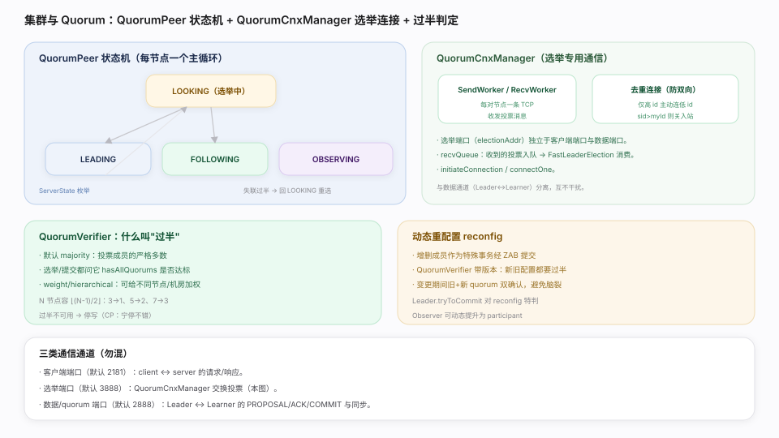
定位集群与 Quorum 是 ZooKeeper 的成员协调与拓扑层——管理每个节点的角色状态机、选举通信、"过半"的定义与动态成员变更（对应 etcd 的成员与集群）。它为 [[ZAB 原子广播]] 提供选举通信（QuorumCnxManager）与过半判定（QuorumVerifier）、承载 [[会话与临时节点]] 的 local/global 会话拓扑。核实基准：
server/quorum/{QuorumPeer,QuorumCnxManager,QuorumVerifier,QuorumMaj}.java（3.10.0-SNAPSHOT）。一句话总纲集群与 Quorum 是 ZooKeeper 的成员协调层：每个节点跑 QuorumPeer 状态机在 LOOKING/LEADING/FOLLOWING/OBSERVING 间流转，QuorumCnxManager 用选举专用 TCP（3888）收发投票并靠"仅高 server id 主动连低 id"去重双向连接，QuorumVerifier（默认 majority）定义过半、被选举收敛与 tryToCommit 共用，N 节点容 ⌊(N-1)/2⌋ 故障、失去过半即停写（CP）；reconfig 把增删成员作为 ZAB 事务提交、变更期新旧配置双 quorum 确认防脑裂。集群有客户端(2181)/数据(2888)/选举(3888)三条独立通道——用奇数节点、放行全部端口、跨机房用 Observer 扩读，是运维要害。
调优要点
- 节点数用奇数（3/5/7）；偶数不增容错反增开销。
initLimit/syncLimit：连接与同步的 tick 上限——大数据集/慢网调大。- 跨机房用 Observer 或分层 quorum（weight）扩读、隔离投票延迟。
reconfigEnabled：开启动态重配置（默认关，生产按需开）。- 选举端口/数据端口必须放行（防火墙常只放 2181 导致集群起不来）。
常见误区
- 只放行 2181：忘了 2888/3888，集群无法选主/复制。
- 偶数节点：4 节点仍只容 1 故障，浪费；用奇数。
- 以为 Observer 参与投票：Observer 不投票、不计 quorum，只同步+读。
- 手改配置文件扩缩容：应使用 reconfig（经 ZAB 双 quorum 确认），手改易脑裂。
- 过半挂了还期望能写：CP 系统在失去 quorum 时停写，属预期行为。
三类通信通道
| 通道 | 默认端口 | 用途 |
|---|---|---|
| 客户端 | 2181 | client ↔ server 请求/响应 |
| quorum / 数据 | 2888 | Leader ↔ Learner 的 PROPOSAL/ACK/COMMIT 与同步 |
| 选举 | 3888 | QuorumCnxManager 交换投票（LOOKING 期） |
角色与组件
| 组件/角色 | 职责 | 锚点 |
|---|---|---|
| QuorumPeer | 节点状态机主循环 | QuorumPeer.java：ServerState:578、run 主 switch |
| QuorumCnxManager | 选举连接收发 + 去重 | QuorumCnxManager.java:99（:510 去重、:167 recvQueue） |
| QuorumVerifier / QuorumMaj | 过半判定 | QuorumVerifier.java / QuorumMaj.java |
| Learner / LearnerHandler | Follower/Observer 与 Leader 的同步 | Learner.java / LearnerHandler.java |
| Observer | 非投票，扩读吞吐 | Observer.java / ObserverZooKeeperServer.java |
ZooKeeper 原理 · 支撑主线 · ACL 权限
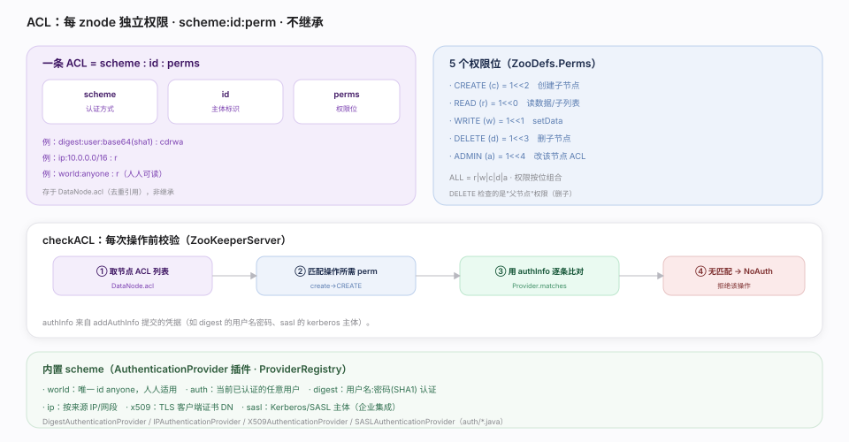
定位ACL 是 ZooKeeper 的访问控制层——每个 znode 独立挂一组
scheme:id:perm 决定谁能对它做什么（对应 etcd 的 RBAC，但 ZK 是每节点独立、不继承的 ACL 而非角色-key 范围模型）。它在 [[请求处理链]] 的 PrepRequestProcessor 里对每个操作前置 checkACL，与 [[数据树 DataTree]] 的 DataNode.acl 绑定。核实基准：server/ZooKeeperServer.java:2065（checkACL）、server/auth/*、ZooDefs.java（3.10.0-SNAPSHOT）。一句话总纲ACL 是 ZooKeeper 的访问控制：每个 znode 独立挂一组 scheme:id:perms（不继承），scheme 是插件式认证方式（world/auth/digest/ip/x509/sasl，经 ProviderRegistry 注册）、perms 是 READ/WRITE/CREATE/DELETE/ADMIN 五个按位组合的权限（CREATE/DELETE 查父节点权限）；PrepRequestProcessor 在每个操作前调 checkACL——取节点 ACL、匹配所需 perm、用会话 addAuthInfo 提交的 authInfo 逐条比对、无匹配抛 NoAuthException。与 etcd 的 user-role-range RBAC 不同，ZK 是每节点独立 ACL，保护子树需逐节点显式设置；生产务必禁用 world:anyone:ALL、按需上 digest/sasl/x509。
调优要点
- 生产禁用
world:anyone:ALL（OPEN_ACL_UNSAFE 是"unsafe"）——至少加 digest/sasl 保护敏感路径。 zookeeper.DigestAuthenticationProvider.superDigest：配置超级用户绕过 ACL（运维救急，妥善保管）。zookeeper.sessionRequireClientSASLAuth/enforce.auth.enabled+enforce.auth.schemes：强制客户端认证。- x509 / SASL 用于企业级 mTLS / Kerberos 集成。
- ACL 变更需 ADMIN 权限；批量保护子树要脚本逐节点设。
常见误区
- 以为 ACL 继承：不继承——父设了 ACL 子节点仍是自己的（默认 OPEN）；建子时要显式带 ACL。
- 裸跑 OPEN_ACL_UNSAFE：任何人可读写删——生产事故常源于此。
- 以为 DELETE 看子节点权限：删子看的是父节点的 DELETE 权限。
- digest 明文：ACL 里存的是 SHA1 摘要，但传输需 TLS 才防窃听。
- auth scheme 混淆：
auth表示"任何已认证用户"，不带具体 id，创建时常用来"只有我（当前认证身份）可访问"。
内置 scheme（认证方式插件）
| scheme | id 含义 | 实现 |
|---|---|---|
| world | 唯一 anyone，人人适用 | 内置 |
| auth | 当前会话已认证的任意用户（不写具体 id） | 内置 |
| digest | 用户名:密码（存 SHA1 摘要） | DigestAuthenticationProvider |
| ip | 来源 IP / 网段 | IPAuthenticationProvider |
| x509 | TLS 客户端证书 DN | X509AuthenticationProvider |
| sasl | Kerberos / SASL 主体（企业集成） | SASLAuthenticationProvider |
与 etcd RBAC 对照
| 维度 | ZooKeeper ACL | etcd RBAC |
|---|---|---|
| 挂载点 | 每 znode 独立，不继承 | user→role→key range 权限 |
| 主体 | scheme:id（world/auth/digest/ip/x509/sasl） | user + role |
| 粒度 | 单节点（+CREATE/DELETE 看父） | key 或 key range/前缀 |
| 认证 | 插件式 provider（addAuthInfo 提交凭据） | 用户名密码 / TLS，token 会话 |
| 继承 | 无（子不继承父） | 角色按 range 覆盖多 key |